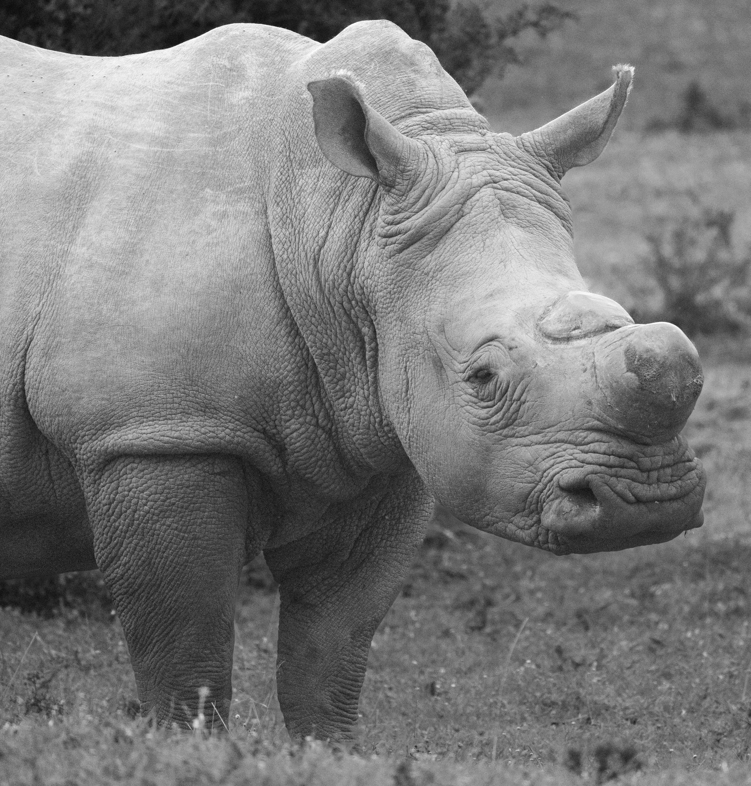

White Rhino is endangered

Hornless White Rhino by Pexels.
- Poaching is the main threat to the Northern White Rhino population. Poachers targeted their horns which are used in traditional Asian medicine. In addition, due to climate change, they are losing their habitat.